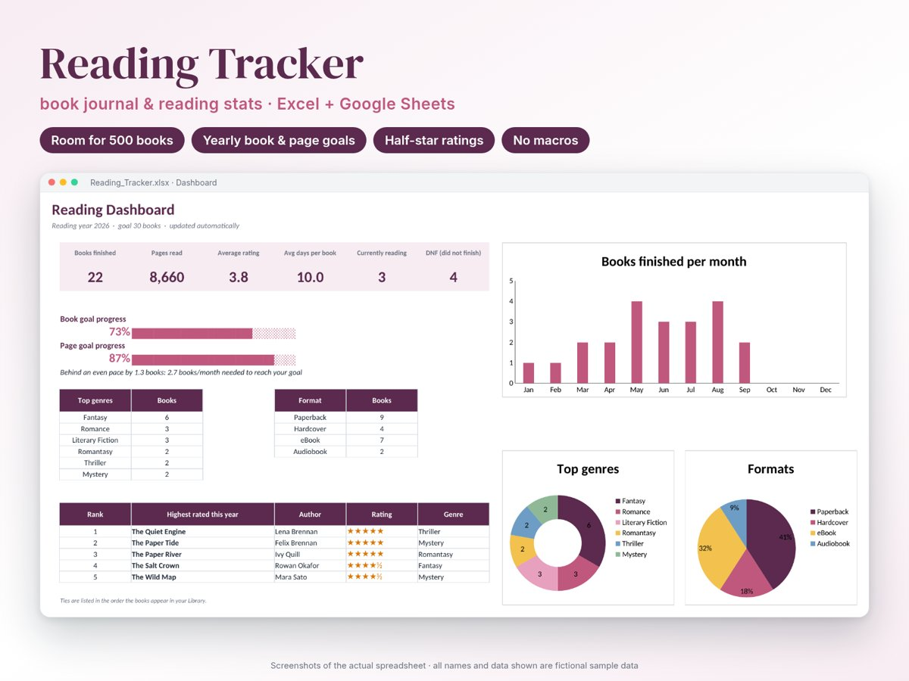
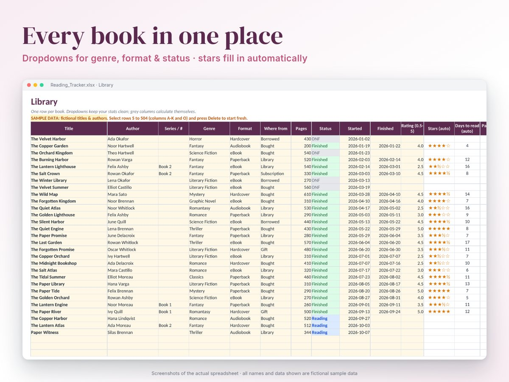
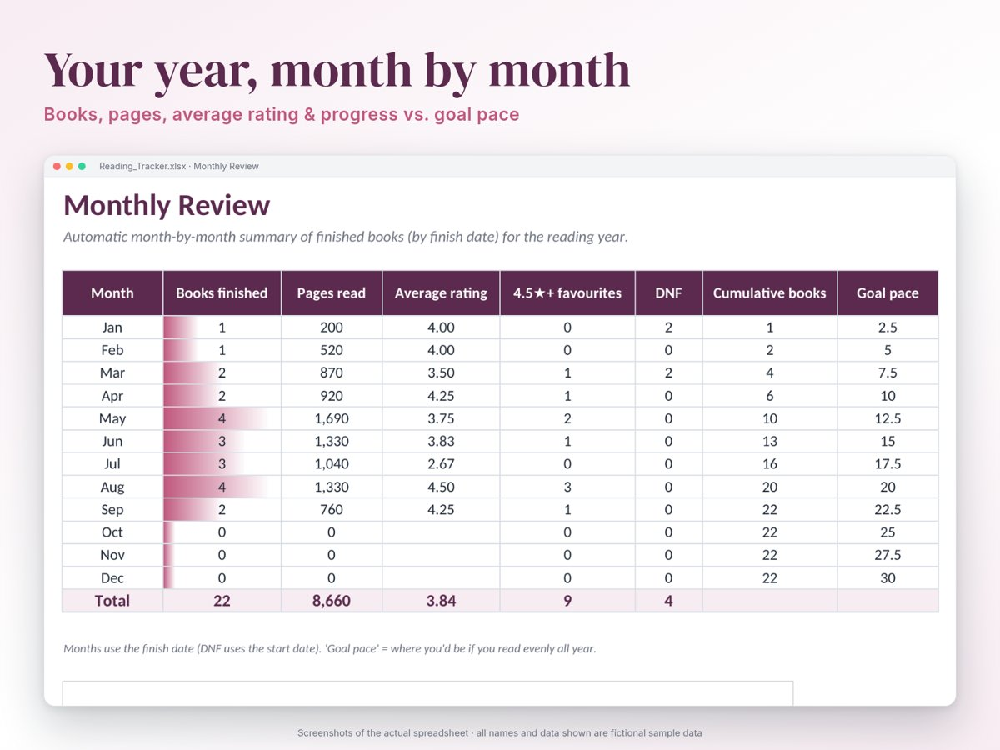
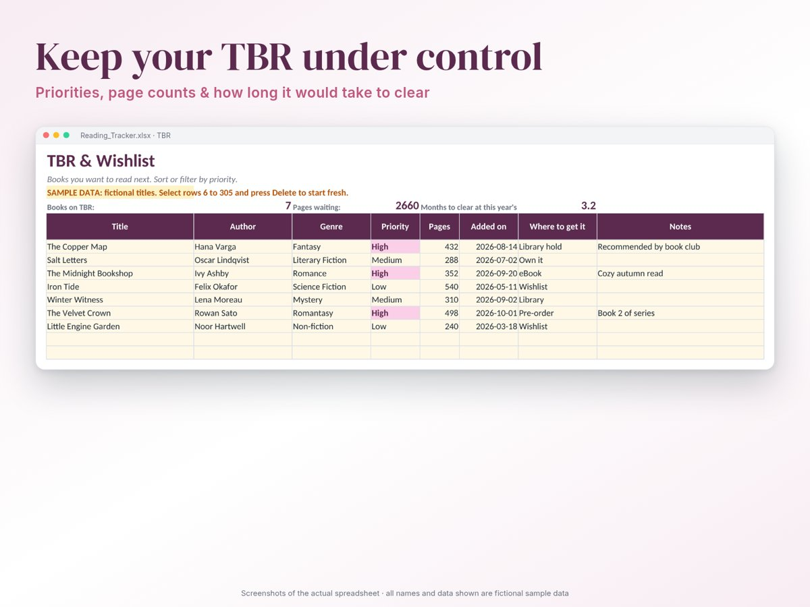
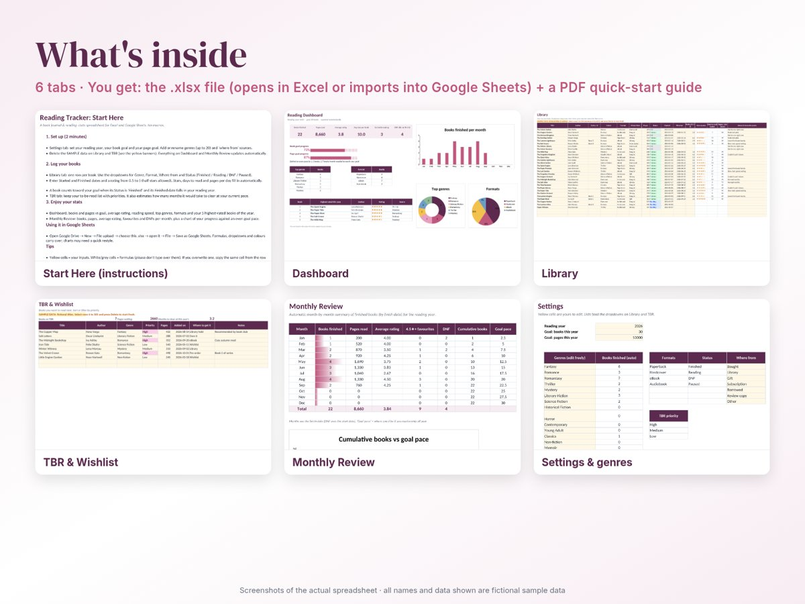
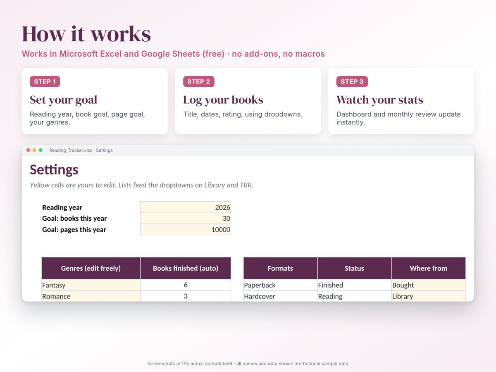

Reading Tracker & book journal
Log every book you read and get your stats for free: goal progress, pages, average rating, reading speed, favourite genres and a month-by-month review.
$9 one-time · instant download
Buy now What's insideGoogle Sheets and Excel 2010+ · no macros · room for 500 books and 300 TBR titles

What it does
- Yearly goals: book and page goals with progress bars, and whether you're ahead of or behind an even pace.
- Library: title, author, series, genre, format, source, pages, dates, rating (half stars) and notes. Stars, days to read and pages per day are calculated for you.
- Dashboard: books finished, pages, average rating, average days per book, currently reading, DNFs, top 6 genres, formats and your 5 highest-rated books of the year.
- Monthly review: books, pages, average rating, favourites and DNFs for each month, plus a chart against your goal pace.
- TBR & wishlist: priorities, page counts and an estimate of how long your pile would take at your current pace.
- Yours to customise: edit up to 20 genres and your own list of sources.





Screenshots of the actual file. All titles, authors and numbers are fictional sample data.
Who it's for
Readers who want their reading stats in a file they own, without an app or a social network, and who like seeing their year in charts.
FAQ
- Does it work in Google Sheets?
- Yes. Upload the .xlsx to Google Drive and choose File → Save as Google Sheets. Formulas, dropdowns and colours carry over; charts may need a quick restyle, and Excel's in-cell data bars aren't shown in Google Sheets.
- Which Excel versions?
- Excel 2010 or later on Windows or Mac, plus Excel for the web. There are no macros.
- What do I receive?
- An instant download containing the .xlsx file and a PDF quick-start guide.
- Is the sample data real?
- No. Every name, title and number in the screenshots is fictional sample data, there so you can see the file working. You delete it before you start.
- Refunds?
- If the file doesn't work as described, contact us and we'll fix it or refund you.
- Can I import my Goodreads history?
- Not automatically. You can export your Goodreads library as CSV and paste the title, author, pages, dates and rating columns into the Library tab.
- Can I use it on my phone?
- Yes, through the Google Sheets app once you've saved it as a Google Sheet. Editing is easiest on a computer.